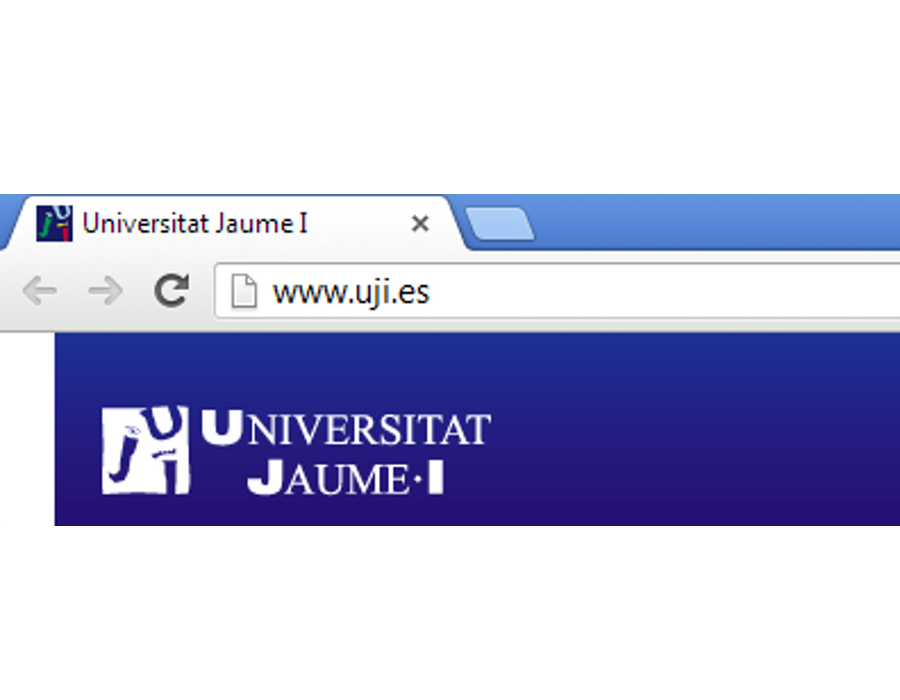
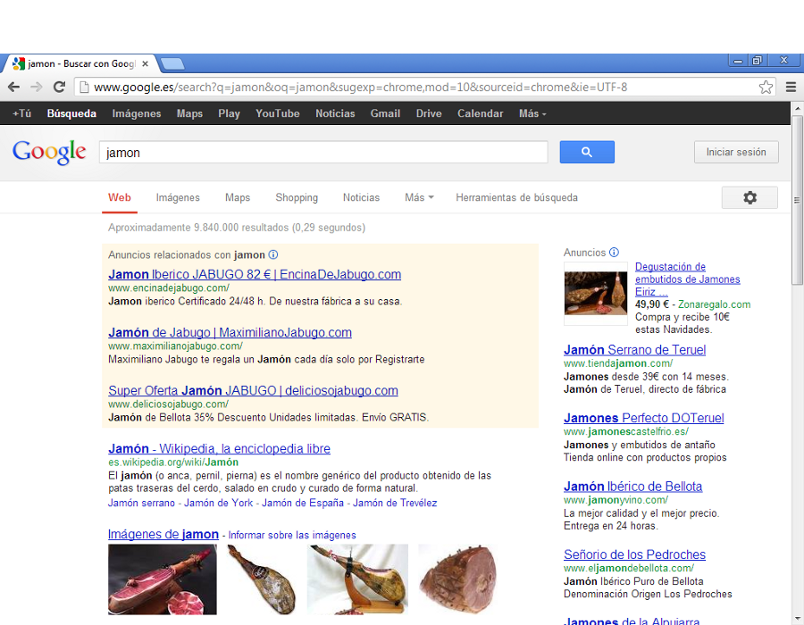
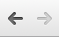
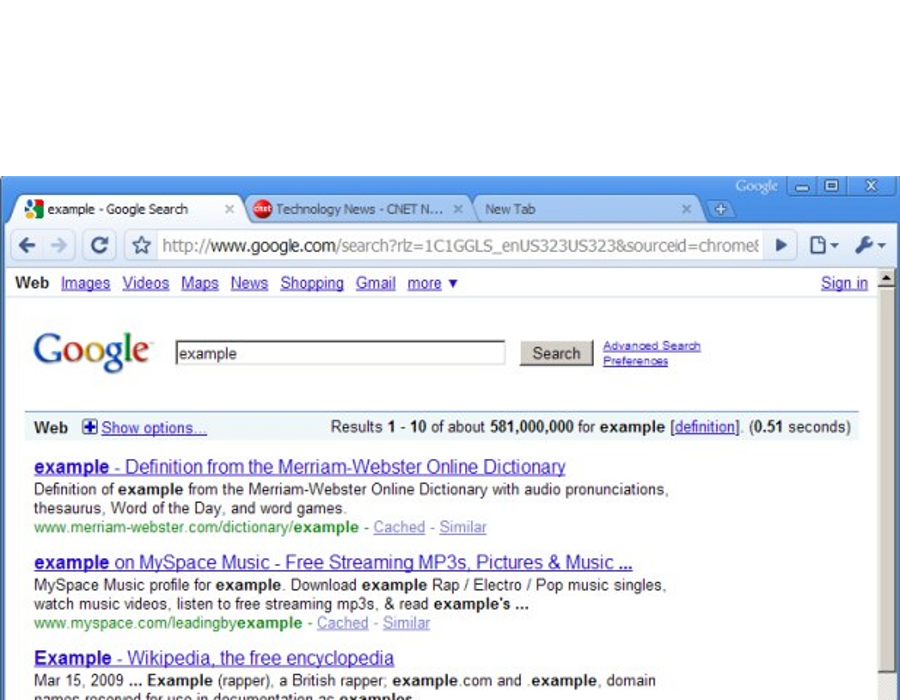
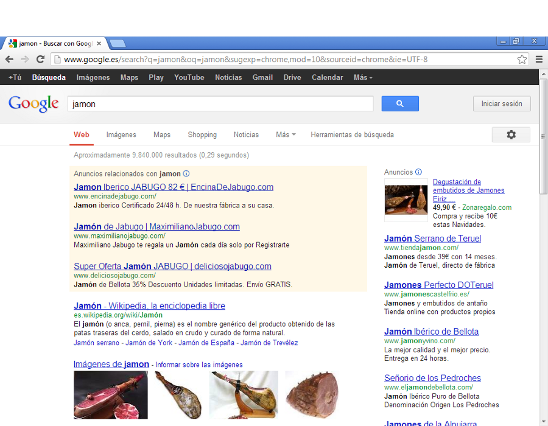
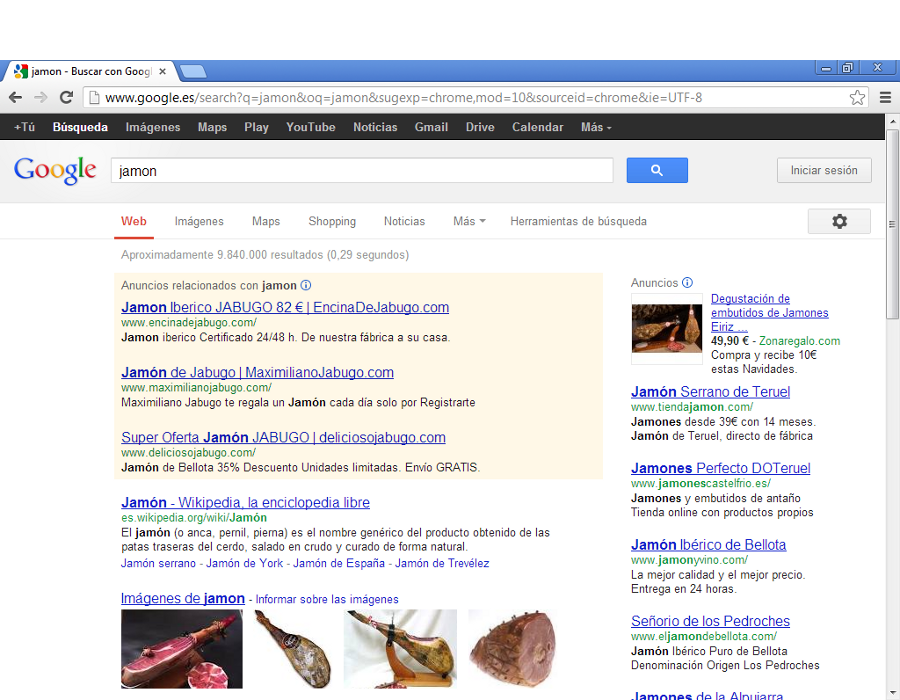
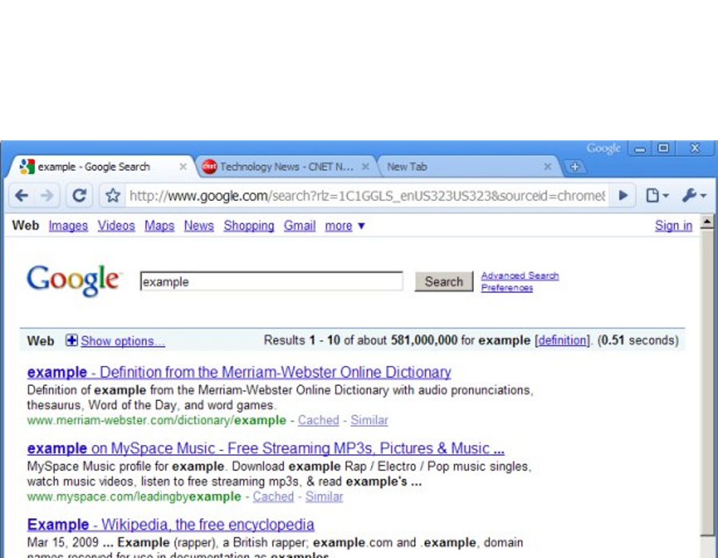
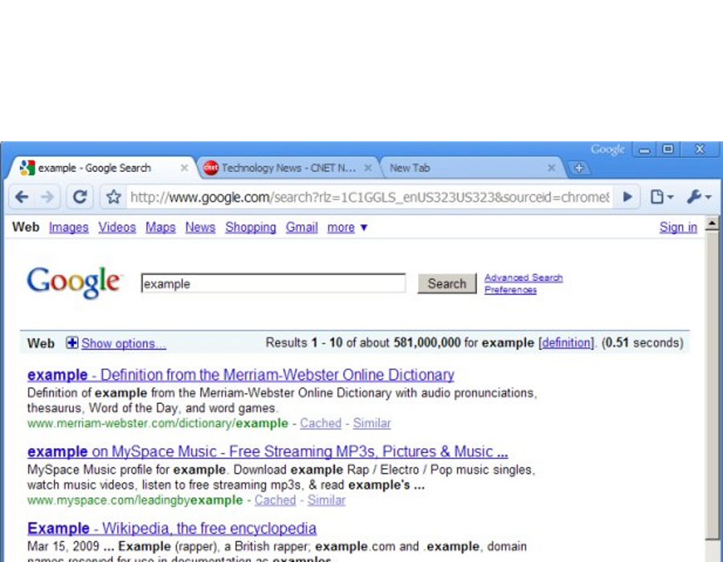

Toda la información con la que trabajamos en un ordenador se mantiene en una memoria volátil, que no se guarda de manera permanente salvo que se lo digamos. Es decir:
Uso de aplicaciones de consulta. Cuando vemos un video, navegamos una página web o escuchamos música no necesitamos guardar nada.
Uso de aplicaciones de creación. Si retocamos fotos, creamos un documento de texto, o diseñamos un nuevo dibujo deberemos guardar nuestra información de manera persistente.
¿Cómo se guarda la información?
Siempre que queramos que nuestro trabajo se guarde y podamos volver a acceder a él entre sesiones, deberemos guardarlo.
Función guardar. Todas las aplicaciones de creación tienen una opción de menú para guardar nuestro trabajo.
Guardar documento. Guardar un documento implica almacenarlo en una ubicación (carpeta) y darle un nombre.
Guardar un dibujo
Características del guardado de un documento
El guardado SIEMPRE se realiza del mismo modo. Todas las aplicaciones comparten esta característica entre si. Lo fundamental que deberemos saber es:
Dónde se guarda el documento. En nuestro disposivo de almacenamiento guardamos los documentos estructurados en carpetas, como ya veremos.
Qué nombre le damos al documento. El nombre del documento es lo que nos diferenciará unos documentos de otros a la hora de volver a acceder a ellos.
Cambia de foto con las teclas: ↑ y ↓
Cambia de foto con las teclas: ↑ y ↓
Los hiperenlaces de una página web
Cada web tiene su propia estructura, su información, y se navega según unos hiperenlaces que ha decidido la persona que montó la web.
Enlaces internos. Hay enlaces que nos llevarán a otra sección dentro del mismo sitio web.
Enlaces externos. Otros enlaces nos llevarán a otras páginas diferentes, ubicadas en otras partes del mundo.
Icono hiperenlace. Podemos saber si un texto tiene hiperenlace si al pasar el puntero del ratón por encima nos aparece el icono de la mano.
La navegación
¿Cómo se navega por la web? Es una técnica en apariencia sencilla que lleva mucha complejidad en su proceso.
Navegador. Es la aplicación que nos conecta a la WWW.
Ratón. Es el dispositivo de entrada de datos que nos permite ir saltando entre hiperenlaces.
Teclado. Es el dispositivo que nos permite introducir texto en una página web.
Cambia de foto con las teclas: ↑ y ↓
La dirección web (URL)
La URL (Uniform Resource Locator) es la manera que tenemos de acceder a los contenidos de la web.
Como si de un callejero se tratase, para navegar necesitamos conocer direcciones.
Páginas web hay miles de millones. Cada una de ellas tiene una dirección web que la identifica.
No hace falta aprenderse todas. Tenemos varias ayudas en la navegación para poder acceder a todos los contenidos sin tener que memorizar cada URL.
Cambia de foto con las teclas: ↑ y ↓
La navegación con buscadores
Hace unos años encontrar contenidos en la web era complicado, ya que necesitábamos conocer uno o varios enlaces de los que partir para encontrar la información que buscábamos. Hoy en día es más fácil gracias a los motores de búsqueda.
El buscador es una página web. Sólo deberemos recordar la URL del buscador para tener el punto de partida.
Conoce e indexa toda la información. Cuando le preguntemos por un tema nos dirá cuáles son las páginas más importantes relacionadas.
Cambia de foto con las teclas: ↑ y ↓
El navegador web
Un navegador o navegador web (del inglés, web browser) es un programa que permite ver la información que contiene una página web (ya se encuentre ésta alojada en un servidor dentro de la World Wide Web o en un servidor local).
Barra de direcciones web
La barra de direcciones nos permite ir directamente a una página web, sin tener que utilizar hiperenlaces.
Cambiamos la dirección actual por la nuestra. Y para confirmar el cambio de página, pulsamos la tecla Intro.
No llevan acentos, ni espacios, ni caracteres especiales.
A medida que escribimos nos sugiere resultados. Los resultados son páginas que coinciden con lo que escribimos y que hemos visitado anteriormente.
Si escribimos mal la URL o algo que no es una dirección, se realizará una búsqueda en google.


Cambia de foto con las teclas: ↑ y ↓
Los botones atrás y adelante

La sesión de navegación se registra, y el navegador nos proporciona unas utilidades para poder retornar a una página que estábamos antes.
Utilidad. Poder volver a una página anterior a partir de la la cual hemos ido navegando.
La navegación nos dispersa. Los botones de adelante/atrás nos permiten volver a un punto anterior en el que no estábamos divagando.
Cada ventana de navegación tiene su propio historial. Si se nos abre una ventana o una pestaña nueva, esa ventana tiene su propio historial de páginas, no podremos volver atrás.
Adelante y atrás
Las pestañas
Para facilitarnos el trabajar con varias ventanas de navegador disponemos de las Pestañas.
Utilidad. Tener varias páginas abiertas al mismo tiempo en una única ventana.
Muy práctico. Podemos abrir/cerrar/mover pestañas y ordenar nuestra navegación fácilmente.
Requiere práctica. Hay que saber cuando abrir en pestaña y cuándo no.

Cambia de foto con las teclas: ↑ y ↓
Pestañas
Sobreviviendo a la apertura de ventanas
Uno de los grandes problemas de la navegación web es que nos perdemos fácilmente al abrirse ventanas, pestañas, y páginas, lo que nos da la sensación que perdemos el control.
Cerrar ventanas no deseadas. Si vemos que se han abierto más ventanas de las que necesitamos, dedicamos un momento a cerrarlas.
Siempre utilizar pestañas. Son más manejables que las ventanas.
Práctica. Hay que saber cuando abrir en pestaña y cuándo no.


 


 
